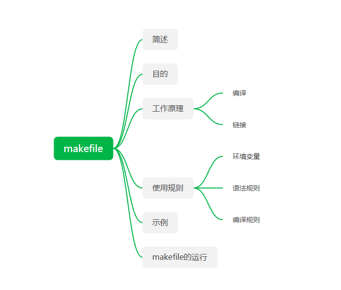

<!DOCTYPE HTML>
<html lang="zh-CN">
<head><meta name="generator" content="Hexo 3.8.0">
    <!--Setting-->
    <meta charset="UTF-8">
    <meta name="viewport" content="width=device-width, user-scalable=no, initial-scale=1.0, maximum-scale=1.0, minimum-scale=1.0">
    <meta http-equiv="X-UA-Compatible" content="IE=Edge,chrome=1">
    <meta http-equiv="Cache-Control" content="no-siteapp">
    <meta http-equiv="Cache-Control" content="no-transform">
    <meta name="renderer" content="webkit|ie-comp|ie-stand">
    <meta name="apple-mobile-web-app-capable" content="我的博客 - blog">
    <meta name="apple-mobile-web-app-status-bar-style" content="black">
    <meta name="format-detection" content="telephone=no,email=no,adress=no">
    <meta name="browsermode" content="application">
    <meta name="screen-orientation" content="portrait">
    <link rel="dns-prefetch" href="https://lives.xtcgch.ink">
    <!--SEO-->

<meta name="description" content="脑容量不够，笔记来凑">


<meta name="robots" content="all">
<meta name="google" content="all">
<meta name="googlebot" content="all">
<meta name="verify" content="all">
    <!--Title-->


<title>【原理】 编译原理之Makefile篇 | 我的博客 - blog</title>


    <link rel="alternate" href="/atom.xml" title="我的博客 - blog" type="application/atom+xml">


    <link rel="icon" href="https://blog.xtcgch.ink/img/background/海绵宝宝.ico">

    


<link rel="stylesheet" href="/css/bootstrap.min.css?rev=3.3.7">
<link rel="stylesheet" href="/css/font-awesome.min.css?rev=4.5.0">
<link rel="stylesheet" href="/css/style.css?rev=@@hash">


    


    

</head>

</html>
<!--[if lte IE 8]>
<style>
    html{ font-size: 1em }
</style>
<![endif]-->
<!--[if lte IE 9]>
<div style="ie">你使用的浏览器版本过低，为了你更好的阅读体验，请更新浏览器的版本或者使用其他现代浏览器，比如Chrome、Firefox、Safari等。</div>
<![endif]-->

<body>
    <header class="main-header" style="background-image:url(https://blog.xtcgch.ink/img/head-bg.jpg)">
    <div class="main-header-box">
        <a class="header-avatar" href="/" title="unistd68">
            
        </a>
        <div class="branding">
        	<!--<h2 class="text-hide">Snippet主题,从未如此简单有趣</h2>-->
            
                <h2> 脑容量不够，笔记来凑 </h2>
            
    	</div>
    </div>
</header>
    <nav class="main-navigation">
    <div class="container">
        <div class="row">
            <div class="col-sm-12">
                <div class="navbar-header"><span class="nav-toggle-button collapsed pull-right" data-toggle="collapse" data-target="#main-menu" id="mnav">
                    <span class="sr-only"></span>
                        <i class="fa fa-bars"></i>
                    </span>
                    <a class="navbar-brand" href="https://lives.xtcgch.ink">我的博客 - blog</a>
                </div>
                <div class="collapse navbar-collapse" id="main-menu">
                    <ul class="menu">
                        
                            <li role="presentation" class="text-center">
                                <a href="https://blog.xtcgch.ink/"><i class="fa "></i>主页</a>
                            </li>
                        
                            <li role="presentation" class="text-center">
                                <a href="https://blog.xtcgch.ink/categories/原理/"><i class="fa "></i>原理</a>
                            </li>
                        
                            <li role="presentation" class="text-center">
                                <a href="https://blog.xtcgch.ink/categories/代码/"><i class="fa "></i>代码</a>
                            </li>
                        
                            <li role="presentation" class="text-center">
                                <a href="https://blog.xtcgch.ink/categories/开源/"><i class="fa "></i>开源</a>
                            </li>
                        
                            <li role="presentation" class="text-center">
                                <a href="https://blog.xtcgch.ink/categories/面试/"><i class="fa "></i>面试</a>
                            </li>
                        
                            <li role="presentation" class="text-center">
                                <a href="https://blog.xtcgch.ink/categories/其他/"><i class="fa "></i>其他</a>
                            </li>
                        
                            <li role="presentation" class="text-center">
                                <a href="https://blog.xtcgch.ink/archives/"><i class="fa "></i>时间轴</a>
                            </li>
                        
                    </ul>
                </div>
            </div>
        </div>
    </div>
</nav>
    <section class="content-wrap">
        <div class="container">
            <div class="row">
                <main class="col-md-8 main-content m-post">
                    <p id="process"></p>
<article class="post">
    <div class="post-head">
        <h1 id="【原理】 编译原理之Makefile篇">
            
	            【原理】 编译原理之Makefile篇
            
        </h1>
        <div class="post-meta">
    
    
    <span class="categories-meta fa-wrap">
        <i class="fa fa-folder-open-o"></i>
        <a href="https://blog.xtcgch.ink/categories/原理">
            原理
        </a>
    </span>
    

    
    <span class="fa-wrap">
        <i class="fa fa-tags"></i>
        <span class="tags-meta">
            
                
                    <a href="https://blog.xtcgch.ink/tags/MAKEFILE" title="MAKEFILE">
                        MAKEFILE
                    </a>
                
                    <a href="https://blog.xtcgch.ink/tags/编译" title="编译">
                        编译
                    </a>
                
            
        </span>
    </span>
    

    
        
        <span class="fa-wrap">
            <i class="fa fa-clock-o"></i>
            <span class="date-meta">2018/11/23</span>
        </span>
        
    
</div>

            
            
            <p class="fa fa-exclamation-triangle warning">
                本文于<strong>1053</strong>天之前发表，文中内容可能已经过时。
            </p>
        
    </div>
    
    <div class="post-body post-content">
        <p><strong>摘要</strong>：在unix/linux服务器下编译工程时，特别是大型工程，使用makefile语法是一个非常好的选择。</p>
<a id="more"></a>
<hr>
<h2 id="脑图"><a href="#脑图" class="headerlink" title="脑图"></a>脑图</h2><p></p>
<hr>
<h2 id="简述"><a href="#简述" class="headerlink" title="简述"></a>简述</h2><ol>
<li>Makefile里有什么？</li>
</ol>
<p>Makefile里主要包含了五个东西：<strong>显式规则</strong>、<strong>隐晦规则</strong>、<strong>变量定义</strong>、<strong>文件指示</strong>和<strong>注释</strong>。</p>
<p>（1）显式规则。显式规则说明了，如何生成一个或多的的目标文件。这是由Makefile的书写者明显指出，要生成的文件，文件的依赖文件，生成的命令。</p>
<p>（2）隐晦规则。由于我们的make有自动推导的功能，所以隐晦的规则可以让我们比较粗糙地简略地书写Makefile，这是由make所支持的。</p>
<p>（3）变量的定义。在Makefile中我们要定义一系列的变量，变量一般都是字符串，这个有点你C语言中的宏，当Makefile被执行时，其中的变量都会被扩展到相应的引用位置上。</p>
<p>（4）文件指示。其包括了三个部分，<br>一个是在一个Makefile中引用另一个Makefile，就像C语言中的include一样；<br>另一个是指根据某些情况指定Makefile中的有效部分，就像C语言中的预编译#if一样；还有就是定义一个多行的命令。有关这一部分的内容，我会在后续的部分中讲述。</p>
<p>（5）注释。Makefile中只有<strong>行注释</strong>，和UNIX的Shell脚本一样，其注释是用“#”字符，这个就像C/C++中的“//”一样。如果你要在你的Makefile中使用“#”字符，可以用反斜框进行转义，如：“#”。</p>
<ol start="2">
<li>Makefile的文件名</li>
</ol>
<p>（1）默认情况：“GNUmakefile”、“makefile”、“Makefile”</p>
<p>（2）自定义：“Make.Linux”，“Make.Solaris”，“Make.AIX”</p>
<ol start="3">
<li>Make</li>
</ol>
<p>（1）默认文件：“GNUmakefile”、“makefile”、“Makefile”</p>
<p>（2）指定要make的文件：<code>make -f filename</code>或<code>make -file filename</code>,如：<code>make -f Make.Linux</code>或<code>make --file Make.AIX</code>。</p>
<ol start="4">
<li>make运行时机</li>
</ol>
<p>make会比较targets文件和prerequisites文件的修改日期，如果prerequisites文件的日期要比targets文件的日期要新，或者target不存在的话，那么，make就会执行后续定义的命令</p>
<hr>
<h2 id="目的"><a href="#目的" class="headerlink" title="目的"></a>目的</h2><p> 自动化管理工程项目的编译命令</p>
<hr>
<h2 id="工作原理"><a href="#工作原理" class="headerlink" title="工作原理"></a>工作原理</h2><ol>
<li>编译</li>
</ol>
<p>编译时，编译器需要的是语法的正确，函数与变量的声明的正确。对于后者，通常是你需要告诉编译器头文件的所在位置（头文件中应该只是声明，而定义应该放在C/C++文件中），只要所有的语法正确，编译器就可以编译出中间目标文件。一般来说，每个源文件都应该对应于一个中间目标文件（O文件或是OBJ文件）</p>
<ol start="2">
<li>链接</li>
</ol>
<p>链接时，主要是链接函数和全局变量，所以，我们可以使用这些中间目标文件（O文件或是OBJ文件）来链接我们的应用程序。链接器并不管函数所在的源文件，只管函数的中间目标文件（Object File），在大多数时候，由于源文件太多，编译生成的中间目标文件太多，而在链接时需要明显地指出中间目标文件名，这对于编译很不方便，所以，我们要给中间目标文件打个包，在Windows下这种包叫“库文件”（Library File)，也就是 .lib 文件，在UNIX下，是Archive File，也就是 .a 文件。</p>
<hr>
<h2 id="使用规则"><a href="#使用规则" class="headerlink" title="使用规则"></a>使用规则</h2><h3 id="环境变量"><a href="#环境变量" class="headerlink" title="环境变量"></a>环境变量</h3><ol>
<li>变量的基础</li>
</ol>
<p>声明时，需要给变量赋予初值<br>使用时，需要给在变量名前加上“$”符号，但最好用小括号“（）”或是大括号“{}”把变量给包括起来。<br>如果你要使用真实的“$”字符，那么你需要用“$$”来表示。变量可以使用在许多地方，如规则中的“目标”、“依赖”、“命令”以及新的变量中。</p>
<p>（1）变量定义</p>
<figure class="highlight plain"><table><tr><td class="gutter"><pre><span class="line">1</span><br></pre></td><td class="code"><pre><span class="line">objects = program.o foo.o utils.o</span><br></pre></td></tr></table></figure>
<p>（2）变量的引用</p>
<figure class="highlight plain"><table><tr><td class="gutter"><pre><span class="line">1</span><br><span class="line">2</span><br></pre></td><td class="code"><pre><span class="line">program : $(objects)</span><br><span class="line">cc -o program $(objects)</span><br></pre></td></tr></table></figure>
<p>变量会在使用它的地方精确地展开，就像C/C++中的宏一样</p>
<figure class="highlight plain"><table><tr><td class="gutter"><pre><span class="line">1</span><br><span class="line">2</span><br><span class="line">3</span><br></pre></td><td class="code"><pre><span class="line">foo = prog.c</span><br><span class="line">prog.o : $(foo)</span><br><span class="line">cc -c $(foo)</span><br></pre></td></tr></table></figure>
<p>展开后得到：</p>
<figure class="highlight plain"><table><tr><td class="gutter"><pre><span class="line">1</span><br><span class="line">2</span><br></pre></td><td class="code"><pre><span class="line">prog.o : prog.c</span><br><span class="line">cc -c prog.c</span><br></pre></td></tr></table></figure>
<ol start="2">
<li>变量的变量</li>
</ol>
<p>在定义变量的值时，我们可以使用其它变量来构造变量的值，在Makefile中有<strong>两种</strong>方式来在用变量定义变量的值</p>
<p><strong>第一种方式</strong>：简单的使用“=”号，在<code>=</code>左侧是变量，右侧是变量的值，右侧变量的值可以定义在文件的任何一处<br><figure class="highlight plain"><table><tr><td class="gutter"><pre><span class="line">1</span><br><span class="line">2</span><br><span class="line">3</span><br><span class="line">4</span><br><span class="line">5</span><br></pre></td><td class="code"><pre><span class="line">foo = $(bar)</span><br><span class="line">bar = $(ugh)</span><br><span class="line">ugh = Huh?</span><br><span class="line">all:</span><br><span class="line">echo $(foo)</span><br></pre></td></tr></table></figure></p>
<p>输出：</p>
<figure class="highlight plain"><table><tr><td class="gutter"><pre><span class="line">1</span><br></pre></td><td class="code"><pre><span class="line">Huh?</span><br></pre></td></tr></table></figure>
<p><strong>第二种方式</strong>：使用的是<code>:=</code>操作符, 并且必须先定义变量，才能被引用<br><figure class="highlight plain"><table><tr><td class="gutter"><pre><span class="line">1</span><br><span class="line">2</span><br><span class="line">3</span><br></pre></td><td class="code"><pre><span class="line">x := foo</span><br><span class="line">y := $(x) bar</span><br><span class="line">x := later</span><br></pre></td></tr></table></figure></p>
<p>等价于</p>
<figure class="highlight plain"><table><tr><td class="gutter"><pre><span class="line">1</span><br><span class="line">2</span><br></pre></td><td class="code"><pre><span class="line">y := foo bar</span><br><span class="line">x := later</span><br></pre></td></tr></table></figure>
<ol start="3">
<li>变量值的替换</li>
</ol>
<ul>
<li><strong>普通模式</strong></li>
</ul>
<p>替换变量中的共有的部分，其格式是<code>$(var:a=b)</code>或是<code>${var:a=b}</code>，其意思是，把变量<code>var</code>中所有以<code>a</code>字串“结尾”的<code>a</code>替换成<code>b</code>字串。这里的“结尾”意思是<code>空格</code>或是<code>结束符</code></p>
<figure class="highlight plain"><table><tr><td class="gutter"><pre><span class="line">1</span><br><span class="line">2</span><br></pre></td><td class="code"><pre><span class="line">foo := a.o b.o c.o</span><br><span class="line">bar := $(foo:.o=.c)</span><br></pre></td></tr></table></figure>
<p>解释：</p>
<p>先定义了一个<code>$(foo)</code>变量，而第二行的意思是把<code>$(foo)</code>中所有以<code>.o</code>字串结尾全部替换成<code>.c</code>，所以我们的“$(bar)”的值就是<code>a.c b.c c.c</code></p>
<ul>
<li><strong>静态模式</strong></li>
</ul>
<figure class="highlight plain"><table><tr><td class="gutter"><pre><span class="line">1</span><br><span class="line">2</span><br></pre></td><td class="code"><pre><span class="line">foo := a.o b.o c.o</span><br><span class="line">bar := $(foo:%.o=%.c)</span><br></pre></td></tr></table></figure>
<p>这依赖于被替换字串中的有相同的模式，模式中必须包含一个“%”字符，这个例子同样让$(bar)变量的值为“a.c b.c c.c”</p>
<ol start="4">
<li>把变量的值再当成变量</li>
</ol>
<figure class="highlight plain"><table><tr><td class="gutter"><pre><span class="line">1</span><br><span class="line">2</span><br><span class="line">3</span><br></pre></td><td class="code"><pre><span class="line">x = y</span><br><span class="line">y = z</span><br><span class="line">a := $($(x))</span><br></pre></td></tr></table></figure>
<p>在这个例子中，$(x)的值是“y”，所以$($(x))就是$(y)，于是$(a)的值就是“z”。（注意，是“x=y”，而不是“x=$(y)”）</p>
<ol start="5">
<li>追加变量值</li>
</ol>
<figure class="highlight plain"><table><tr><td class="gutter"><pre><span class="line">1</span><br><span class="line">2</span><br></pre></td><td class="code"><pre><span class="line">objects = main.o foo.o bar.o utils.o</span><br><span class="line">objects += another.o</span><br></pre></td></tr></table></figure>
<p><code>$(objects)</code>值：<code>main.o foo.o bar.o utils.o another.o</code></p>
<ol start="6">
<li>override 指示符</li>
</ol>
<p>如果有变量是通常make的命令行参数设置的，那么Makefile中对这个变量的赋值会被忽略。如果你想在Makefile中设置这类参数的值，那么，你可以使用“override”指示符。其语法是：<br><figure class="highlight plain"><table><tr><td class="gutter"><pre><span class="line">1</span><br><span class="line">2</span><br></pre></td><td class="code"><pre><span class="line">override &lt;variable&gt; = &lt;value&gt;</span><br><span class="line">override &lt;variable&gt; := &lt;value&gt;</span><br></pre></td></tr></table></figure></p>
<p>追加：</p>
<figure class="highlight plain"><table><tr><td class="gutter"><pre><span class="line">1</span><br></pre></td><td class="code"><pre><span class="line">override &lt;variable&gt; += &lt;more text&gt;</span><br></pre></td></tr></table></figure>
<ol start="7">
<li>多行变量</li>
</ol>
<p>语法： define 指示符后面跟的是变量的名字，另起一行定义变量的值，以endef关键字结束定义。</p>
<figure class="highlight plain"><table><tr><td class="gutter"><pre><span class="line">1</span><br><span class="line">2</span><br><span class="line">3</span><br><span class="line">4</span><br></pre></td><td class="code"><pre><span class="line">define two-lines</span><br><span class="line">echo foo</span><br><span class="line">echo $(bar)</span><br><span class="line">endef</span><br></pre></td></tr></table></figure>
<ol start="8">
<li>环境变量</li>
</ol>
<p>make 运行时的系统环境变量可以在make开始运行时被载入到Makefile文件中,但是如果Makefile中已定义了这个变量,或是这个变量由make命令行带入,那么系统的环境变量的值将被覆盖。</p>
<p>如果我们在环境变量中设置了<code>CFLAGS</code>环境变量，那么我们就可以在所有的Makefile中使用这个变量了</p>
<p>如果Makefile中定义了<code>CFLAGS</code>,那么则会使用Makefile中的这个变量,如果没有定义则使用系统环境变量的值</p>
<p>当make嵌套调用时,上层Makefile中定义的变量会以系统环境变量的方式传递到下层的Makefile中</p>
<p>默认情况下,只有通过命令行设置的变量会被传递。而定义在文件中的变量,如果要向下层 Makefile传递,则需要使用exprot关键字来声明</p>
<ol start="9">
<li>目标变量</li>
</ol>
<p>为某个目标设置局部变量,它可以和“全局变量”同名,因为它的作用范围只在这条规则以及连带规则中,所以其值也只在作用范围内有效,而不会影响规则链以外的全局变量的值</p>
<p><strong>语法</strong>：</p>
<figure class="highlight plain"><table><tr><td class="gutter"><pre><span class="line">1</span><br><span class="line">2</span><br></pre></td><td class="code"><pre><span class="line">&lt;target ...&gt; : &lt;variable-assignment&gt;</span><br><span class="line">&lt;target ...&gt; : overide &lt;variable-assignment&gt;</span><br></pre></td></tr></table></figure>
<p><code>&lt;variable-assignment&gt;</code>可以是前面讲过的各种赋值表达式，如“=”、“:=”、“+=”或是“？=”。第二个语法是针对于make命令行带入的变量，或是系统环境变量。</p>
<p><strong>示例</strong>：</p>
<figure class="highlight plain"><table><tr><td class="gutter"><pre><span class="line">1</span><br><span class="line">2</span><br><span class="line">3</span><br><span class="line">4</span><br><span class="line">5</span><br><span class="line">6</span><br><span class="line">7</span><br><span class="line">8</span><br><span class="line">9</span><br><span class="line">10</span><br><span class="line">11</span><br><span class="line">12</span><br><span class="line">13</span><br><span class="line">14</span><br><span class="line">15</span><br></pre></td><td class="code"><pre><span class="line">prog : CFLAGS = -g</span><br><span class="line">prog : prog.o foo.o bar.o</span><br><span class="line">$(CC) $(CFLAGS) prog.o foo.o bar.o</span><br><span class="line"></span><br><span class="line"></span><br><span class="line">prog.o : prog.c</span><br><span class="line">$(CC) $(CFLAGS) prog.c</span><br><span class="line"></span><br><span class="line"></span><br><span class="line">foo.o : foo.c</span><br><span class="line">$(CC) $(CFLAGS) foo.c</span><br><span class="line"></span><br><span class="line"></span><br><span class="line">bar.o : bar.c</span><br><span class="line">$(CC) $(CFLAGS) bar.c</span><br></pre></td></tr></table></figure>
<p>不管全局的$(CFLAGS)的值是什么，在prog目标，以及其所引发的所有规则中（prog.o foo.o bar.o的规则），$(CFLAGS)的值都是“-g”</p>
<ol start="10">
<li>模式变量</li>
</ol>
<figure class="highlight plain"><table><tr><td class="gutter"><pre><span class="line">1</span><br></pre></td><td class="code"><pre><span class="line">%.o : CFLAGS = -O</span><br></pre></td></tr></table></figure>
<p>或</p>
<figure class="highlight plain"><table><tr><td class="gutter"><pre><span class="line">1</span><br><span class="line">2</span><br><span class="line">3</span><br><span class="line">4</span><br><span class="line">5</span><br><span class="line">6</span><br><span class="line">7</span><br><span class="line">8</span><br><span class="line">9</span><br><span class="line">10</span><br></pre></td><td class="code"><pre><span class="line">libs_for_gcc = -lgnu</span><br><span class="line">normal_libs =</span><br><span class="line"></span><br><span class="line"></span><br><span class="line">foo: $(objects)</span><br><span class="line">ifeq ($(CC),gcc)</span><br><span class="line">$(CC) -o foo $(objects) $(libs_for_gcc)</span><br><span class="line">else</span><br><span class="line">$(CC) -o foo $(objects) $(normal_libs)</span><br><span class="line">endif</span><br></pre></td></tr></table></figure>
<h3 id="语法规则"><a href="#语法规则" class="headerlink" title="语法规则"></a>语法规则</h3><ol>
<li>基础使用</li>
</ol>
<figure class="highlight plain"><table><tr><td class="gutter"><pre><span class="line">1</span><br><span class="line">2</span><br><span class="line">3</span><br></pre></td><td class="code"><pre><span class="line">target... : prerequisites ...</span><br><span class="line">          command</span><br><span class="line">          ...</span><br></pre></td></tr></table></figure>
<p><strong>target</strong>也就是一个目标文件，可以是Object File，也可以是执行文件。还可以是一个标签（Label），对于标签这种特性，在后续的“伪目标”章节中会有叙述。</p>
<p><strong>prerequisites</strong>就是，要生成那个target所需要的文件或是目标。</p>
<p><strong>command</strong>也就是make需要执行的命令。（任意的Shell命令）</p>
<figure class="highlight plain"><table><tr><td class="gutter"><pre><span class="line">1</span><br><span class="line">2</span><br></pre></td><td class="code"><pre><span class="line">foo.o: foo.c defs.h       # foo模块</span><br><span class="line">       cc -c -g foo.c</span><br></pre></td></tr></table></figure>
<p>注解：<br>（1）<code>foo.o</code>是<code>target</code>，目标文件；<br>（2）<code>foo.c defs.h</code>是<code>prerequisites</code>，依赖文件；<br>（3）<code>cc -c -g foo.c</code>就是<code>command</code>，即make需要执行的命令。</p>
<p>规则包含两个部分，一个是<strong>依赖关系</strong>，一个是<strong>生成目标的方法</strong>。</p>
<ol start="2">
<li>函数方面</li>
</ol>
<ul>
<li>函数调用</li>
</ul>
<figure class="highlight plain"><table><tr><td class="gutter"><pre><span class="line">1</span><br><span class="line">2</span><br><span class="line">3</span><br></pre></td><td class="code"><pre><span class="line">（1）$(&lt;function&gt; &lt;arguments&gt; )</span><br><span class="line"></span><br><span class="line">（2）$&#123;&lt;function&gt; &lt;arguments&gt;&#125;</span><br></pre></td></tr></table></figure>
<p>例子：</p>
<figure class="highlight plain"><table><tr><td class="gutter"><pre><span class="line">1</span><br></pre></td><td class="code"><pre><span class="line">“$(subst a,b,$(x))”</span><br></pre></td></tr></table></figure>
<p>其中，<code>subst</code>就是函数名，<code>a,b,S(x)</code>就是参数</p>
<ul>
<li><strong>字符串函数</strong></li>
</ul>
<figure class="highlight plain"><table><tr><td class="gutter"><pre><span class="line">1</span><br></pre></td><td class="code"><pre><span class="line">$(subst &lt;from&gt;,&lt;to&gt;,&lt;text&gt; )</span><br></pre></td></tr></table></figure>
<p>示例</p>
<figure class="highlight plain"><table><tr><td class="gutter"><pre><span class="line">1</span><br></pre></td><td class="code"><pre><span class="line">$(subst ee,EE,feet on the street)</span><br></pre></td></tr></table></figure>
<p>作用：把<code>feet on the street</code>中的<code>ee</code>替换成<code>EE</code><br>结果：返回<code>fEEt on the strEEt</code>。</p>
<ul>
<li><strong>加前缀函数——addprefix</strong></li>
</ul>
<p>功能：把前缀<prefix>加到<names>中的每个单词后面。<br>返回：返回加过前缀的文件名序列。<br>示例：$(addprefix src/,foo bar)返回值是“src/foo src/bar”</names></prefix></p>
<ul>
<li><strong>加后缀函数——addsuffix</strong></li>
</ul>
<p>功能：把后缀<suffix>加到<names>中的每个单词后面。<br>返回：返回加过后缀的文件名序列。<br>示例：$(addsuffix .c,foo bar)返回值是“foo.cbar.c”</names></suffix></p>
<ul>
<li><strong>取前缀函数——basename</strong></li>
</ul>
<p>功能：从文件名序列<names>中取出各个文件名的前缀部分。<br>返回：返回文件名序列<names>的前缀序列，如果文件没有前缀，则返回空字串。<br>示例：$(basename src/foo.c src-1.0/bar.c hacks)返回值是“src/foo src-1.0/bar hacks”</names></names></p>
<ul>
<li><strong>取后缀函数——suffix</strong></li>
</ul>
<p>功能：从文件名序列<names>中取出各个文件名的后缀。<br>返回：返回文件名序列<names>的后缀序列，如果文件没有后缀，则返回空字串。<br>示例：$(suffix src/foo.c src-1.0/bar.chacks)返回值是“.c.c”</names></names></p>
<ul>
<li><strong>取目录函数——dir</strong></li>
</ul>
<p>功能：从文件名序列<names>中取出目录部分。目录部分是指最后一个反斜杠（“/”）<br>之前的部分。如果没有反斜杠，那么返回“./”。<br>返回：返回文件名序列<names>的目录部分。<br>示例：$(dir src/foo.c hacks)返回值是“src/./”</names></names></p>
<ul>
<li><strong>foreach 函数</strong></li>
</ul>
<p>这个函数的意思是，把参数<list>中的单词逐一取出放到参数<var>所指定的变量中，<br>然后再执行<text>所包含的表达式。每一次<text>会返回一个字符串，循环过程中，</text></text></var></list></p>
<p><text>的所返回的每个字符串会以空格分隔，最后当整个循环结束时，<text>所返回的<br>每个字符串所组成的整个字符串（以空格分隔）将会是foreach函数的返回值。</text></text></p>
<p>所以，<var>最好是一个变量名，<list>可以是一个表达式，而<text>中一般会使用<br><var>这个参数来依次枚举<list>中的单词</list></var></text></list></var></p>
<p>示例：</p>
<figure class="highlight plain"><table><tr><td class="gutter"><pre><span class="line">1</span><br><span class="line">2</span><br></pre></td><td class="code"><pre><span class="line">names := a b c d</span><br><span class="line">files := $(foreach n,$(names),$(n).o)</span><br></pre></td></tr></table></figure>
<p>输出：<code>a.o b.o c.o d.o</code></p>
<ul>
<li><p><strong>if 函数</strong></p>
<figure class="highlight plain"><table><tr><td class="gutter"><pre><span class="line">1</span><br><span class="line">2</span><br></pre></td><td class="code"><pre><span class="line">$(if &lt;condition&gt;,&lt;then-part&gt; )</span><br><span class="line">$(if &lt;condition&gt;,&lt;then-part&gt;,&lt;else-part&gt; )</span><br></pre></td></tr></table></figure>
</li>
<li><p><strong>call函数</strong></p>
</li>
</ul>
<p>语法：$(call <expression>,<parm1>,<parm2>,<parm3>…)<br>功能：当make执行这个函数时，<expression>参数中的变量，如$(1)，$(2)，$(3)等，会被参<br>数<parm1>，<parm2>，<parm3>依次取代。而<expression>的返回值就是call函数的返<br>回值。<br>示例：<br><figure class="highlight plain"><table><tr><td class="gutter"><pre><span class="line">1</span><br><span class="line">2</span><br><span class="line">3</span><br></pre></td><td class="code"><pre><span class="line">reverse = $(1) $(2)</span><br><span class="line">foo = $(call reverse,a,b)</span><br><span class="line">echo $(reverse)</span><br></pre></td></tr></table></figure></expression></parm3></parm2></parm1></expression></parm3></parm2></parm1></expression></p>
<p> 输出：<code>a b</code></p>
<ul>
<li><p><strong>origin函数</strong><br>语法：$(origin <variable> )<br>origin函数的返回值:<br><code>undefined</code>: 从来没有定义过，origin函数返回这个值“undefined”。<br><code>default</code>:是一个默认的定义，比如“CC”这个变量，这种变量我们将在后面讲述。<br><code>environment</code>:是一个环境变量，并且当Makefile被执行时，“-e”参数没有被打开<br><code>file</code>:被定义在Makefile中<br><code>command line</code>:被命令行定义<br><code>override</code>:被override指示符重新定义<br><code>automatic</code>:一个命令运行中的自动化变量</variable></p>
</li>
<li><p><strong>shell函数</strong><br>功能：用操作系统命令以及字符串处理命令awk，sed等等命令<br>示例：</p>
<figure class="highlight plain"><table><tr><td class="gutter"><pre><span class="line">1</span><br><span class="line">2</span><br><span class="line">3</span><br><span class="line">4</span><br><span class="line">5</span><br><span class="line">6</span><br><span class="line">7</span><br><span class="line">8</span><br><span class="line">9</span><br></pre></td><td class="code"><pre><span class="line">contents := $(shell cat foo)</span><br><span class="line">files := $(shell echo \*.c)</span><br><span class="line">```	</span><br><span class="line"></span><br><span class="line">- **控制make的函数**</span><br><span class="line"></span><br><span class="line">- **include函数**</span><br><span class="line"></span><br><span class="line">在Makefile使用include关键字可以把别的Makefile包含进来，这很像C语言的#include，被包含的文件会原模原样的放在当前文件的包含位置。include的语法是：</span><br></pre></td></tr></table></figure>
</li>
</ul>
<p>include<filename>filename可以是当前操作系统Shell的文件模式（可以保含路径和通配符）<br><figure class="highlight plain"><table><tr><td class="gutter"><pre><span class="line">1</span><br><span class="line">2</span><br></pre></td><td class="code"><pre><span class="line"></span><br><span class="line">在include前面可以有一些空字符，但是绝不能是[Tab]键开始。include和可以用一个或多个空格隔开。举个例子，你有这样几个Makefile：a.mk、b.mk、c.mk，还有一个文件叫foo.make，以及一个变量$(bar)，其包含了e.mk和f.mk，那么，下面的语句：</span><br></pre></td></tr></table></figure></filename></p>
<p>   include foo.make *.mk $(bar)<br><figure class="highlight plain"><table><tr><td class="gutter"><pre><span class="line">1</span><br><span class="line">2</span><br></pre></td><td class="code"><pre><span class="line"></span><br><span class="line">等价于：</span><br></pre></td></tr></table></figure></p>
<p>   include foo.make a.mk b.mk c.mk e.mk f.mk<br><figure class="highlight plain"><table><tr><td class="gutter"><pre><span class="line">1</span><br><span class="line">2</span><br></pre></td><td class="code"><pre><span class="line"></span><br><span class="line">make命令开始时，会把找寻include所指出的其它Makefile，并把其内容安置在当前的位置。就好像C/C++的#include指令一样。如果文件都没有指定绝对路径或是相对路径的话，make会在当前目录下首先寻找，如果当前目录下没有找到，那么，make还会在下面的几个目录下找：</span><br></pre></td></tr></table></figure></p>
<p>1.如果make执行时，有“-I”或“–include-dir”参数，那么make就会在这个参数所指定的目录下去寻找。<br>2.如果目录/include（一般是：/usr/local/bin或/usr/include）存在的话，make也会去找。<br><figure class="highlight plain"><table><tr><td class="gutter"><pre><span class="line">1</span><br><span class="line">2</span><br></pre></td><td class="code"><pre><span class="line"></span><br><span class="line">如果有文件没有找到的话，make会生成一条警告信息，但不会马上出现致命错误。它会继续载入其它的文件，一旦完成makefile的读取，make会再重试这些没有找到，或是不能读取的文件，如果还是不行，make才会出现一条致命信息。如果你想让make不理那些无法读取的文件，而继续执行，你可以在include前加一个减号“-”。如：</span><br></pre></td></tr></table></figure></p>
<p>-include<filename><br><figure class="highlight plain"><table><tr><td class="gutter"><pre><span class="line">1</span><br><span class="line">2</span><br><span class="line">3</span><br><span class="line">4</span><br><span class="line">5</span><br><span class="line">6</span><br><span class="line">7</span><br><span class="line">8</span><br><span class="line">9</span><br><span class="line">10</span><br></pre></td><td class="code"><pre><span class="line"></span><br><span class="line">其表示，无论include过程中出现什么错误，都不要报错继续执行。和其它版本make兼容的相关命令是sinclude，其作用和这一个是一样的。</span><br><span class="line"></span><br><span class="line"></span><br><span class="line">- **去空格函数 - strip**</span><br><span class="line"></span><br><span class="line">语法：`$(strip &lt;string&gt; )`</span><br><span class="line">功能：去掉&lt;string&gt;字串中开头和结尾的空字符。</span><br><span class="line">返回：返回被去掉空格的字符串值。</span><br><span class="line">示例：</span><br></pre></td></tr></table></figure></filename></p>
<p>$(strip a b c )<br>把字串“abc”去到开头和结尾的空格，结果是“abc”<br><figure class="highlight plain"><table><tr><td class="gutter"><pre><span class="line">1</span><br><span class="line">2</span><br><span class="line">3</span><br><span class="line">4</span><br><span class="line">5</span><br><span class="line">6</span><br><span class="line">7</span><br></pre></td><td class="code"><pre><span class="line"></span><br><span class="line">- **查找字符串函数 - findstring**</span><br><span class="line"></span><br><span class="line">语法：`$(findstring &lt;find&gt;,&lt;in&gt; )`</span><br><span class="line">功能：在字串&lt;in&gt;中查找&lt;find&gt;字串。</span><br><span class="line">返回：如果找到，那么返回&lt;find&gt;，否则返回空字符串。</span><br><span class="line">示例：</span><br></pre></td></tr></table></figure></p>
<p>$(findstring a,a b c)<br>$(findstring a,b c)<br><figure class="highlight plain"><table><tr><td class="gutter"><pre><span class="line">1</span><br><span class="line">2</span><br><span class="line">3</span><br><span class="line">4</span><br><span class="line">5</span><br><span class="line">6</span><br><span class="line">7</span><br><span class="line">8</span><br><span class="line">9</span><br><span class="line">10</span><br></pre></td><td class="code"><pre><span class="line">第一个函数返回“a”字符串，第二个返回“”字符串（空字符串）</span><br><span class="line">$(filter &lt;pattern...&gt;,&lt;text&gt; )</span><br><span class="line"></span><br><span class="line">- **过滤函数 - filter**</span><br><span class="line"></span><br><span class="line">语法：`$(filter &lt;pattern...&gt;,&lt;text&gt; )`</span><br><span class="line">功能：以&lt;pattern&gt;模式过滤&lt;text&gt;字符串中的单词，保留符合模式&lt;pattern&gt;的单词。可</span><br><span class="line">以有多个模式。</span><br><span class="line">返回：返回符合模式&lt;pattern&gt;的字串。</span><br><span class="line">示例：</span><br></pre></td></tr></table></figure></p>
<p>sources := foo.c bar.c baz.s ugh.h<br>foo: $(sources)<br>cc $(filter %.c %.s,$(sources)) -o foo<br><figure class="highlight plain"><table><tr><td class="gutter"><pre><span class="line">1</span><br><span class="line">2</span><br><span class="line">3</span><br><span class="line">4</span><br><span class="line">5</span><br><span class="line">6</span><br><span class="line">7</span><br><span class="line">8</span><br><span class="line">9</span><br><span class="line">10</span><br><span class="line">11</span><br></pre></td><td class="code"><pre><span class="line"></span><br><span class="line">返回的值是“foo.c bar.c baz.s”</span><br><span class="line"></span><br><span class="line">- **反过滤函数——filter-out**</span><br><span class="line"></span><br><span class="line">语法：`$(filter-out &lt;pattern...&gt;,&lt;text&gt; )`</span><br><span class="line">名称：反过滤函数——filter-out。</span><br><span class="line">功能：以&lt;pattern&gt;模式过滤&lt;text&gt;字符串中的单词，去除符合模式&lt;pattern&gt;的单词。可</span><br><span class="line">以有多个模式。</span><br><span class="line">返回：返回不符合模式&lt;pattern&gt;的字串。</span><br><span class="line">示例：</span><br></pre></td></tr></table></figure></p>
<p>objects=main1.o foo.o main2.o bar.o<br>mains=main1.o main2.o<br><figure class="highlight plain"><table><tr><td class="gutter"><pre><span class="line">1</span><br><span class="line">2</span><br><span class="line">3</span><br><span class="line">4</span><br><span class="line">5</span><br><span class="line">6</span><br><span class="line">7</span><br><span class="line">8</span><br><span class="line">9</span><br><span class="line">10</span><br><span class="line">11</span><br><span class="line">12</span><br><span class="line">13</span><br><span class="line">14</span><br><span class="line">15</span><br><span class="line">16</span><br><span class="line">17</span><br><span class="line">18</span><br><span class="line">19</span><br><span class="line">20</span><br><span class="line">21</span><br><span class="line">22</span><br><span class="line">23</span><br><span class="line">24</span><br><span class="line">25</span><br><span class="line">26</span><br><span class="line">27</span><br><span class="line">28</span><br><span class="line">29</span><br><span class="line">30</span><br><span class="line">31</span><br><span class="line">32</span><br><span class="line">33</span><br><span class="line">34</span><br><span class="line">35</span><br><span class="line">36</span><br><span class="line">37</span><br></pre></td><td class="code"><pre><span class="line">$(filter-out $(mains),$(objects)) 返回值是“foo.o bar.o”</span><br><span class="line"></span><br><span class="line">- **排序函数——sort**</span><br><span class="line"></span><br><span class="line">语法：`$(sort &lt;list&gt; )`</span><br><span class="line">功能：给字符串&lt;list&gt;中的单词排序（升序）。</span><br><span class="line">返回：返回排序后的字符串。</span><br><span class="line">示例：$(sortfoobarlose)返回“barfoolose”。</span><br><span class="line">备注：sort函数会去掉&lt;list&gt;中相同的单词。</span><br><span class="line"></span><br><span class="line">- **取单词函数——word**</span><br><span class="line">语法：`$(word &lt;n&gt;,&lt;text&gt; )`</span><br><span class="line">功能：取字符串&lt;text&gt;中第&lt;n&gt;个单词。（从一开始）</span><br><span class="line">返回：返回字符串&lt;text&gt;中第&lt;n&gt;个单词。如果&lt;n&gt;比&lt;text&gt;中的单词数要大，那么返回</span><br><span class="line">空字符串。</span><br><span class="line">示例：$(word2,foobarbaz)返回值是“bar”</span><br><span class="line"></span><br><span class="line">- **取单词串函数——wordlist**</span><br><span class="line">功能：从字符串&lt;text&gt;中取从&lt;s&gt;开始到&lt;e&gt;的单词串。&lt;s&gt;和&lt;e&gt;是一个数字。</span><br><span class="line">返回：返回字符串&lt;text&gt;中从&lt;s&gt;到&lt;e&gt;的单词字串。如果&lt;s&gt;比&lt;text&gt;中的单词数要大，</span><br><span class="line">那么返回空字符串。如果&lt;e&gt;大于&lt;text&gt;的单词数，那么返回从&lt;s&gt;开始，到&lt;text&gt;结束</span><br><span class="line">的单词串。</span><br><span class="line">示例：$(wordlist2,3,foobarbaz)返回值是“barbaz”</span><br><span class="line"></span><br><span class="line"></span><br><span class="line">3. 功能方面</span><br><span class="line"></span><br><span class="line">- **在规则中使用通配符**</span><br><span class="line"></span><br><span class="line">make支持三各通配符：`*，?，[...]`。</span><br><span class="line"></span><br><span class="line">（1）~</span><br><span class="line">波浪号`~`字符在文件名中也有比较特殊的用途。如果是`~/test`，这就表示当前用户的$HOME目录下的test目录。而`~hchen/test`则表示用户hchen的宿主目录下的test目录。（这些都是Unix下的小知识了，make也支持）而在Windows或是MS-DOS下，用户没有宿主目录，那么波浪号所指的目录则根据环境变量“`HOME`”而定。</span><br><span class="line"></span><br><span class="line">（2）*</span><br><span class="line">通配符代替了你一系列的文件，如`*.c`表示所以后缀为c的文件。一个需要我们注意的是，如果我们的文件名中有通配符，如：`*`，那么可以用转义字符`\`，如`\*`来表示真实的`*`字符，而不是任意长度的字符串。</span><br><span class="line">好吧，还是先来看几个例子吧：</span><br></pre></td></tr></table></figure></p>
<p>clean:<br>        rm -f *.o<br><figure class="highlight plain"><table><tr><td class="gutter"><pre><span class="line">1</span><br><span class="line">2</span><br></pre></td><td class="code"><pre><span class="line"></span><br><span class="line">上面这个例子我不不多说了，这是操作系统Shell所支持的通配符。这是在命令中的通配符。</span><br></pre></td></tr></table></figure></p>
<p>   print: *.c<br>        lpr -p $?<br>        touch print<br><figure class="highlight plain"><table><tr><td class="gutter"><pre><span class="line">1</span><br><span class="line">2</span><br></pre></td><td class="code"><pre><span class="line">        </span><br><span class="line">上面这个例子说明了通配符也可以在我们的规则中，目标print依赖于所有的`[.c]`文件。其中的“`$?`”是一个自动化变量。</span><br></pre></td></tr></table></figure></p>
<p> objects = *.o<br><figure class="highlight plain"><table><tr><td class="gutter"><pre><span class="line">1</span><br><span class="line">2</span><br></pre></td><td class="code"><pre><span class="line"></span><br><span class="line">上面这个例子，表示了，通符同样可以用在变量中。并不是说`[*.o]`会展开，不！`objects`的值就是`*.o`。Makefile中的变量其实就是C/C++中的宏。如果你要让通配符在变量中展开，也就是让`objects`的值是所有`[.o]`的文件名的集合，那么，你可以这样：</span><br></pre></td></tr></table></figure></p>
<p>objects := $(wildcard *.o)<br><figure class="highlight plain"><table><tr><td class="gutter"><pre><span class="line">1</span><br><span class="line">2</span><br><span class="line">3</span><br><span class="line">4</span><br><span class="line">5</span><br><span class="line">6</span><br></pre></td><td class="code"><pre><span class="line"></span><br><span class="line">- **文件搜寻**</span><br><span class="line"></span><br><span class="line">在一些大的工程中，有大量的源文件，我们通常的做法是把这许多的源文件分类，并存放在不同的目录中。所以，当make需要去找寻文件的依赖关系时，你可以在文件前加上路径，但最好的方法是把一个路径告诉make，让make在自动去找。</span><br><span class="line"></span><br><span class="line">Makefile文件中的特殊变量“VPATH”就是完成这个功能的，如果没有指明这个变量，make只会在当前的目录中去找寻依赖文件和目标文件。如果定义了这个变量，那么，make就会在当当前目录找不到的情况下，到所指定的目录中去找寻文件了。</span><br></pre></td></tr></table></figure></p>
<p>   VPATH = src:../headers<br><figure class="highlight plain"><table><tr><td class="gutter"><pre><span class="line">1</span><br><span class="line">2</span><br><span class="line">3</span><br><span class="line">4</span><br><span class="line">5</span><br><span class="line">6</span><br><span class="line">7</span><br><span class="line">8</span><br><span class="line">9</span><br><span class="line">10</span><br><span class="line">11</span><br><span class="line">12</span><br></pre></td><td class="code"><pre><span class="line"></span><br><span class="line">上面的的定义指定两个目录，“src”和“../headers”，make会按照这个顺序进行搜索。目录由“冒号”分隔。（当然，当前目录永远是最高优先搜索的地方）</span><br><span class="line"></span><br><span class="line">另一个设置文件搜索路径的方法是使用make的“vpath”关键字（注意，它是全小写的），这不是变量，这是一个make的关键字，这和上面提到的那个VPATH变量很类似，但是它更为灵活。它可以指定不同的文件在不同的搜索目录中。这是一个很灵活的功能。它的使用方法有三种：</span><br><span class="line"></span><br><span class="line">- `vpath &lt; pattern&gt; &lt; directories&gt;`    为符合模式&lt; pattern&gt;的文件指定搜索目录&lt;directories&gt;。</span><br><span class="line"></span><br><span class="line">- `vpath &lt; pattern&gt; `                             清除符合模式&lt; pattern&gt;的文件的搜索目录。</span><br><span class="line"></span><br><span class="line">- `vpath `                                                清除所有已被设置好了的文件搜索目录。</span><br><span class="line"></span><br><span class="line">vapth使用方法中的&lt; pattern&gt;需要包含“%”字符。“%”的意思是匹配零或若干字符，例如，“%.h”表示所有以“.h”结尾的文件。&lt; pattern&gt;指定了要搜索的文件集，而&lt; directories&gt;则指定了的文件集的搜索的目录。例如：</span><br></pre></td></tr></table></figure></p>
<p>   vpath %.h ../headers<br><figure class="highlight plain"><table><tr><td class="gutter"><pre><span class="line">1</span><br><span class="line">2</span><br><span class="line">3</span><br><span class="line">4</span><br></pre></td><td class="code"><pre><span class="line"></span><br><span class="line">该语句表示，要求make在“../headers”目录下搜索所有以“.h”结尾的文件。（如果某文件在当前目录没有找到的话）</span><br><span class="line"></span><br><span class="line">我们可以连续地使用vpath语句，以指定不同搜索策略。如果连续的vpath语句中出现了相同的&lt; pattern&gt;，或是被重复了的&lt; pattern&gt;，那么，make会按照vpath语句的先后顺序来执行搜索。如：</span><br></pre></td></tr></table></figure></p>
<p>   vpath %.c foo</p>
<p>   vpath %   blish</p>
<p>   vpath %.c bar<br><figure class="highlight plain"><table><tr><td class="gutter"><pre><span class="line">1</span><br><span class="line">2</span><br></pre></td><td class="code"><pre><span class="line"></span><br><span class="line">其表示“.c”结尾的文件，先在“foo”目录，然后是“blish”，最后是“bar”目录。</span><br></pre></td></tr></table></figure></p>
<p>   vpath %.c foo:bar</p>
<p>   vpath %   blish<br><figure class="highlight plain"><table><tr><td class="gutter"><pre><span class="line">1</span><br><span class="line">2</span><br><span class="line">3</span><br><span class="line">4</span><br><span class="line">5</span><br><span class="line">6</span><br></pre></td><td class="code"><pre><span class="line"></span><br><span class="line">而上面的语句则表示“.c”结尾的文件，先在“foo”目录，然后是“bar”目录，最后才是“blish”目录</span><br><span class="line"></span><br><span class="line">- **伪目标**</span><br><span class="line"></span><br><span class="line">最早先的一个例子中，我们提到过一个“clean”的目标，这是一个“伪目标”，</span><br></pre></td></tr></table></figure></p>
<p>   clean:</p>
<pre><code>rm *.o temp
</code></pre><figure class="highlight plain"><table><tr><td class="gutter"><pre><span class="line">1</span><br><span class="line">2</span><br><span class="line">3</span><br><span class="line">4</span><br><span class="line">5</span><br><span class="line">6</span><br></pre></td><td class="code"><pre><span class="line"></span><br><span class="line">正像我们前面例子中的“clean”一样，即然我们生成了许多文件编译文件，我们也应该提供一个清除它们的“目标”以备完整地重编译而用。 （以“make clean”来使用该目标）</span><br><span class="line"></span><br><span class="line">因为，我们并不生成“clean”这个文件。“伪目标”并不是一个文件，只是一个标签，由于“伪目标”不是文件，所以make无法生成它的依赖关系和决定它是否要执行。我们只有通过显示地指明这个“目标”才能让其生效。当然，“伪目标”的取名不能和文件名重名，不然其就失去了“伪目标”的意义了。</span><br><span class="line"></span><br><span class="line">当然，为了避免和文件重名的这种情况，我们可以使用一个特殊的标记“.PHONY”来显示地指明一个目标是“伪目标”，向make说明，不管是否有这个文件，这个目标就是“伪目标”。</span><br></pre></td></tr></table></figure>
<p>   .PHONY : clean<br><figure class="highlight plain"><table><tr><td class="gutter"><pre><span class="line">1</span><br><span class="line">2</span><br></pre></td><td class="code"><pre><span class="line"></span><br><span class="line">只要有这个声明，不管是否有“clean”文件，要运行“clean”这个目标，只有“make clean”这样。于是整个过程可以这样写：</span><br></pre></td></tr></table></figure></p>
<pre><code>.PHONY: clean
</code></pre><p>   clean:</p>
<pre><code>rm *.o temp
</code></pre><figure class="highlight plain"><table><tr><td class="gutter"><pre><span class="line">1</span><br><span class="line">2</span><br></pre></td><td class="code"><pre><span class="line"></span><br><span class="line">伪目标一般没有依赖的文件。但是，我们也可以为伪目标指定所依赖的文件。伪目标同样可以作为“默认目标”，只要将其放在第一个。一个示例就是，如果你的Makefile需要一口气生成若干个可执行文件，但你只想简单地敲一个make完事，并且，所有的目标文件都写在一个Makefile中，那么你可以使用“伪目标”这个特性：</span><br></pre></td></tr></table></figure>
<p>   all : prog1 prog2 prog3<br>   .PHONY : all<br>   prog1 : prog1.o utils.o<br>           cc -o prog1 prog1.o utils.o<br>   prog2 : prog2.o<br>           cc -o prog2 prog2.o<br>   prog3 : prog3.o sort.o utils.o<br>           cc -o prog3 prog3.o sort.o utils.o<br><figure class="highlight plain"><table><tr><td class="gutter"><pre><span class="line">1</span><br><span class="line">2</span><br><span class="line">3</span><br><span class="line">4</span><br></pre></td><td class="code"><pre><span class="line"></span><br><span class="line">我们知道，Makefile中的第一个目标会被作为其默认目标。我们声明了一个“all”的伪目标，其依赖于其它三个目标。由于伪目标的特性是，总是被执行的，所以其依赖的那三个目标就总是不如“all”这个目标新。所以，其它三个目标的规则总是会被决议。也就达到了我们一口气生成多个目标的目的。“.PHONY : all”声明了“all”这个目标为“伪目标”。</span><br><span class="line"></span><br><span class="line">随便提一句，从上面的例子我们可以看出，目标也可以成为依赖。所以，伪目标同样也可成为依赖。看下面的例子：</span><br></pre></td></tr></table></figure></p>
<p>   .PHONY: cleanall cleanobj cleandiff<br>   cleanall : cleanobj cleandiff<br>           rm program<br>   cleanobj :<br>           rm <em>.o<br>   cleandiff :<br>           rm </em>.diff<br><figure class="highlight plain"><table><tr><td class="gutter"><pre><span class="line">1</span><br><span class="line">2</span><br><span class="line">3</span><br><span class="line">4</span><br><span class="line">5</span><br><span class="line">6</span><br></pre></td><td class="code"><pre><span class="line"></span><br><span class="line">“makeclean”将清除所有要被清除的文件。“cleanobj”和“cleandiff”这两个伪目标有点像“子程序”的意思。我们可以输入“makecleanall”和“make cleanobj”和“makecleandiff”命令来达到清除不同种类文件的目的</span><br><span class="line"></span><br><span class="line">- **多目标**</span><br><span class="line"></span><br><span class="line">Makefile的规则中的目标可以不止一个，其支持多目标，有可能我们的多个目标同时依赖于一个文件，并且其生成的命令大体类似。于是我们就能把其合并起来。当然，多个目标的生成规则的执行命令是同一个，这可能会可我们带来麻烦，不过好在我们的可以使用一个自动化变量“$@”（关于自动化变量，将在后面讲述），这个变量表示着目前规则中所有的目标的集合，这样说可能很抽象，还是看一个例子吧。</span><br></pre></td></tr></table></figure></p>
<p>   bigoutput littleoutput : text.g</p>
<pre><code>generate text.g -$(subst output,,$@) &gt; $@
</code></pre><figure class="highlight plain"><table><tr><td class="gutter"><pre><span class="line">1</span><br><span class="line">2</span><br></pre></td><td class="code"><pre><span class="line"></span><br><span class="line">上述规则等价于：</span><br></pre></td></tr></table></figure>
<p>   bigoutput : text.g</p>
<pre><code>generate text.g -big &gt; bigoutput
</code></pre><p>   littleoutput : text.g</p>
<pre><code>generate text.g -little &gt; littleoutput
</code></pre><figure class="highlight plain"><table><tr><td class="gutter"><pre><span class="line">1</span><br><span class="line">2</span><br><span class="line">3</span><br><span class="line">4</span><br><span class="line">5</span><br><span class="line">6</span><br></pre></td><td class="code"><pre><span class="line"></span><br><span class="line">其中，`-$(subst output,,$@) `中的“$”表示执行一个Makefile的函数，函数名为subst，后面的为参数。关于函数，将在后面讲述。这里的这个函数是截取字符串的意思，“$@”表示目标的集合，就像一个数组，“$@”依次取出目标，并执于命令。</span><br><span class="line"></span><br><span class="line">- **静态模式**</span><br><span class="line"></span><br><span class="line">静态模式可以更加容易地定义多目标的规则，可以让我们的规则变得更加的有弹性和灵活。我们还是先来看一下语法：</span><br></pre></td></tr></table></figure>
<p>&lt;targets…&gt;: <target-pattern>: <prereq-patterns ...><br>　　　<commands><br>…<br><figure class="highlight plain"><table><tr><td class="gutter"><pre><span class="line">1</span><br><span class="line">2</span><br><span class="line">3</span><br><span class="line">4</span><br><span class="line">5</span><br><span class="line">6</span><br><span class="line">7</span><br><span class="line">8</span><br><span class="line">9</span><br><span class="line">10</span><br><span class="line">11</span><br><span class="line">12</span><br></pre></td><td class="code"><pre><span class="line"></span><br><span class="line">targets定义了一系列的目标文件，可以有通配符。是目标的一个集合。</span><br><span class="line"></span><br><span class="line">target-parrtern是指明了targets的模式，也就是的目标集模式。</span><br><span class="line"></span><br><span class="line">prereq-parrterns是目标的依赖模式，它对target-parrtern形成的模式再进行一次依赖目标的定义。</span><br><span class="line"></span><br><span class="line">这样描述这三个东西，可能还是没有说清楚，还是举个例子来说明一下吧。如果我们的&lt;target-parrtern&gt;定义成“%.o”，意思是我们的集合中都是以“.o”结尾的，而如果我们的&lt;prereq-parrterns&gt;定义成“%.c”，意思是对&lt;target-parrtern&gt;所形成的目标集进行二次定义，其计算方法是，取&lt;target-parrtern&gt;模式中的“%”（也就是去掉了[.o]这个结尾），并为其加上[.c]这个结尾，形成的新集合。</span><br><span class="line"></span><br><span class="line">所以，我们的“目标模式”或是“依赖模式”中都应该有“%”这个字符，如果你的文件名中有“%”那么你可以使用反斜杠“\”进行转义，来标明真实的“%”字符。</span><br><span class="line"></span><br><span class="line">看一个例子：</span><br></pre></td></tr></table></figure></commands></prereq-patterns></target-pattern></p>
<p>   objects = foo.o bar.o<br>   all: $(objects)<br>   $(objects): %.o: %.c<br>           $(CC) -c $(CFLAGS) $&lt; -o $@<br><figure class="highlight plain"><table><tr><td class="gutter"><pre><span class="line">1</span><br><span class="line">2</span><br><span class="line">3</span><br></pre></td><td class="code"><pre><span class="line"> </span><br><span class="line"></span><br><span class="line">上面的例子中，指明了我们的目标从$object中获取，“%.o”表明要所有以“.o”结尾的目标，也就是“foo.o bar.o”，也就是变量$object集合的模式，而依赖模式“%.c”则取模式“%.o”的“%”，也就是“foobar”，并为其加下“.c”的后缀，于是，我们的依赖目标就是“foo.cbar.c”。而命令中的“$&lt;”和“$@”则是自动化变量，“$&lt;”表示所有的依赖目标集（也就是“foo.c bar.c”），“$@”表示目标集（也褪恰癴oo.o bar.o”）。于是，上面的规则展开后等价于下面的规则：</span><br></pre></td></tr></table></figure></p>
<p>   foo.o : foo.c</p>
<pre><code>$(CC) -c $(CFLAGS) foo.c -o foo.o
</code></pre><p>   bar.o : bar.c</p>
<pre><code>$(CC) -c $(CFLAGS) bar.c -o bar.o
</code></pre><figure class="highlight plain"><table><tr><td class="gutter"><pre><span class="line">1</span><br></pre></td><td class="code"><pre><span class="line">试想，如果我们的“%.o”有几百个，那种我们只要用这种很简单的“静态模式规则”就可以写完一堆规则，实在是太有效率了。“静态模式规则”的用法很灵活，如果用得好，那会一个很强大的功能。再看一个例子：</span><br></pre></td></tr></table></figure>
<p>   files = foo.elc bar.o lose.o<br>   $(filter %.o,$(files)): %.o: %.c<br>           $(CC) -c $(CFLAGS) $&lt; -o $@<br>   $(filter %.elc,$(files)): %.elc: %.el<br>           emacs -f batch-byte-compile $&lt;<br><figure class="highlight plain"><table><tr><td class="gutter"><pre><span class="line">1</span><br><span class="line">2</span><br><span class="line">3</span><br><span class="line">4</span><br><span class="line">5</span><br><span class="line">6</span><br></pre></td><td class="code"><pre><span class="line"></span><br><span class="line">$(filter%.o,$(files))表示调用Makefile的filter函数，过滤“$filter”集，只要其中模式为“%.o”的内容。其的它内容，我就不用多说了吧。这个例字展示了Makefile中更大的弹性。</span><br><span class="line"></span><br><span class="line">- **自动生成依赖性**</span><br><span class="line"></span><br><span class="line">在Makefile中，我们的依赖关系可能会需要包含一系列的头文件，比如，如果我们的main.c中有一句“#include &quot;defs.h&quot;”，那么我们的依赖关系应该是：</span><br></pre></td></tr></table></figure></p>
<p>   main.o : main.c defs.h<br><figure class="highlight plain"><table><tr><td class="gutter"><pre><span class="line">1</span><br><span class="line">2</span><br></pre></td><td class="code"><pre><span class="line"></span><br><span class="line">但是，如果是一个比较大型的工程，你必需清楚哪些C文件包含了哪些头文件，并且，你在加入或删除头文件时，也需要小心地修改Makefile，这是一个很没有维护性的工作。为了避免这种繁重而又容易出错的事情，我们可以使用C/C++编译的一个功能。大多数的C/C++编译器都支持一个“-M”的选项，即自动找寻源文件中包含的头文件，并生成一个依赖关系。例如，如果我们执行下面的命令：</span><br></pre></td></tr></table></figure></p>
<p>   cc -M main.c<br><figure class="highlight plain"><table><tr><td class="gutter"><pre><span class="line">1</span><br><span class="line">2</span><br></pre></td><td class="code"><pre><span class="line"></span><br><span class="line">其输出是：</span><br></pre></td></tr></table></figure></p>
<p>   main.o : main.c defs.h<br><figure class="highlight plain"><table><tr><td class="gutter"><pre><span class="line">1</span><br><span class="line">2</span><br><span class="line">3</span><br><span class="line">4</span><br></pre></td><td class="code"><pre><span class="line"></span><br><span class="line">于是由编译器自动生成的依赖关系，这样一来，你就不必再手动书写若干文件的依赖关系，而由编译器自动生成了。需要提醒一句的是，如果你使用GNU的C/C++编译器，你得用“-MM”参数，不然，“-M”参数会把一些标准库的头文件也包含进来。</span><br><span class="line"></span><br><span class="line">gcc-M main.c的输出是：</span><br></pre></td></tr></table></figure></p>
<p>   main.o: main.c defs.h /usr/include/stdio.h /usr/include/features.h \</p>
<pre><code>/usr/include/sys/cdefs.h /usr/include/gnu/stubs.h \

/usr/lib/gcc-lib/i486-suse-linux/2.95.3/include/stddef.h \

/usr/include/bits/types.h /usr/include/bits/pthreadtypes.h \

/usr/include/bits/sched.h /usr/include/libio.h \

/usr/include/_G_config.h /usr/include/wchar.h \

/usr/include/bits/wchar.h /usr/include/gconv.h \

/usr/lib/gcc-lib/i486-suse-linux/2.95.3/include/stdarg.h \

/usr/include/bits/stdio_lim.h
</code></pre><figure class="highlight plain"><table><tr><td class="gutter"><pre><span class="line">1</span><br><span class="line">2</span><br><span class="line">3</span><br></pre></td><td class="code"><pre><span class="line"> </span><br><span class="line"></span><br><span class="line">gcc -MM main.c的输出则是：</span><br></pre></td></tr></table></figure>
<p>   main.o: main.c defs.h<br><figure class="highlight plain"><table><tr><td class="gutter"><pre><span class="line">1</span><br><span class="line">2</span><br><span class="line">3</span><br><span class="line">4</span><br><span class="line">5</span><br><span class="line">6</span><br></pre></td><td class="code"><pre><span class="line"></span><br><span class="line">那么，编译器的这个功能如何与我们的Makefile联系在一起呢。因为这样一来，我们的Makefile也要根据这些源文件重新生成，让Makefile自已依赖于源文件？这个功能并不现实，不过我们可以有其它手段来迂回地实现这一功能。GNU组织建议把编译器为每一个源文件的自动生成的依赖关系放到一个文件中，为每一个“name.c”的文件都生成一个“name.d”的Makefile文件，[.d]文件中就存放对应[.c]文件的依赖关系。</span><br><span class="line"></span><br><span class="line">于是，我们可以写出[.c]文件和[.d]文件的依赖关系，并让make自动更新或自成[.d]文件，并把其包含在我们的主Makefile中，这样，我们就可以自动化地生成每个文件的依赖关系了。</span><br><span class="line"></span><br><span class="line">这里，我们给出了一个模式规则来产生[.d]文件：</span><br></pre></td></tr></table></figure></p>
<p>   %.d: %.c</p>
<pre><code>@set -e; rm -f $@; \

 $(CC) -M $(CPPFLAGS) $&lt; &gt; $@.
</code></pre><p>; \</p>
<pre><code>sed &apos;s,$∗\.o[ :]*,\1.o $@ : ,g&apos; &lt; $@.
</code></pre><blockquote>
<p>$@; \</p>
</blockquote>
<pre><code>rm -f $@.
</code></pre><figure class="highlight plain"><table><tr><td class="gutter"><pre><span class="line">1</span><br><span class="line">2</span><br><span class="line">3</span><br><span class="line">4</span><br><span class="line">5</span><br></pre></td><td class="code"><pre><span class="line"></span><br><span class="line">这个规则的意思是，所有的[.d]文件依赖于[.c]文件，“rm-f $@”的意思是删除所有的目标，也就是[.d]文件，第二行的意思是，为每个依赖文件“$&lt;”，也就是[.c]文件生成依赖文件，“$@”表示模式“%.d”文件，如果有一个C文件是name.c，那么“%”就是“name”，“</span><br><span class="line">”意为一个随机编号，第二行生成的文件有可能是“name.d.12345”，第三行使用sed命令做了一个替换，关于sed命令的用法请参看相关的使用文档。第四行就是删除临时文件。</span><br><span class="line"></span><br><span class="line">总而言之，这个模式要做的事就是在编译器生成的依赖关系中加入[.d]文件的依赖，即把依赖关系：</span><br></pre></td></tr></table></figure>
<p>   main.o : main.c defs.h<br><figure class="highlight plain"><table><tr><td class="gutter"><pre><span class="line">1</span><br><span class="line">2</span><br></pre></td><td class="code"><pre><span class="line"></span><br><span class="line">转成：</span><br></pre></td></tr></table></figure></p>
<p>   main.o main.d : main.c defs.h<br><figure class="highlight plain"><table><tr><td class="gutter"><pre><span class="line">1</span><br></pre></td><td class="code"><pre><span class="line">于是，我们的[.d]文件也会自动更新了，并会自动生成了，当然，你还可以在这个[.d]文件中加入的不只是依赖关系，包括生成的命令也可一并加入，让每个[.d]文件都包含一个完赖的规则。一旦我们完成这个工作，接下来，我们就要把这些自动生成的规则放进我们的主Makefile中。我们可以使用Makefile的“include”命令，来引入别的Makefile文件（前面讲过），例如：</span><br></pre></td></tr></table></figure></p>
<p>   sources = foo.c bar.c<br><figure class="highlight plain"><table><tr><td class="gutter"><pre><span class="line">1</span><br></pre></td><td class="code"><pre><span class="line"> </span><br></pre></td></tr></table></figure></p>
<p>   include $(sources:.c=.d)<br><figure class="highlight plain"><table><tr><td class="gutter"><pre><span class="line">1</span><br><span class="line">2</span><br><span class="line">3</span><br><span class="line">4</span><br><span class="line">5</span><br><span class="line">6</span><br></pre></td><td class="code"><pre><span class="line">上述语句中的“$(sources:.c=.d)”中的“.c=.d”的意思是做一个替换，把变量$(sources)所有[.c]的字串都替换成[.d]，关于这个“替换”的内容，在后面我会有更为详细的讲述。当然，你得注意次序，因为include是按次来载入文件，最先载入的[.d]文件中的目标会成为默认目标</span><br><span class="line"></span><br><span class="line"></span><br><span class="line">- **清空目标文件的规则**</span><br><span class="line"></span><br><span class="line">每个Makefile中都应该写一个清空目标文件（.o和执行文件）的规则，这不仅便于重编译，也很利于保持文件的清洁。这是一个“修养”（呵呵，还记得我的《编程修养》吗）。一般的风格都是：</span><br></pre></td></tr></table></figure></p>
<pre><code>clean:
    rm edit $(objects)
</code></pre><figure class="highlight plain"><table><tr><td class="gutter"><pre><span class="line">1</span><br><span class="line">2</span><br></pre></td><td class="code"><pre><span class="line"></span><br><span class="line">更为稳健的做法是：</span><br></pre></td></tr></table></figure>
<pre><code>.PHONY : clean
clean :
        -rm edit $(objects)
</code></pre><figure class="highlight plain"><table><tr><td class="gutter"><pre><span class="line">1</span><br><span class="line">2</span><br><span class="line">3</span><br><span class="line">4</span><br><span class="line">5</span><br><span class="line">6</span><br><span class="line">7</span><br><span class="line">8</span><br><span class="line">9</span><br><span class="line">10</span><br><span class="line">11</span><br><span class="line">12</span><br><span class="line">13</span><br><span class="line">14</span><br><span class="line">15</span><br><span class="line">16</span><br><span class="line">17</span><br><span class="line">18</span><br><span class="line">19</span><br><span class="line">20</span><br><span class="line">21</span><br><span class="line">22</span><br><span class="line">23</span><br><span class="line">24</span><br><span class="line">25</span><br><span class="line">26</span><br><span class="line">27</span><br><span class="line">28</span><br><span class="line">29</span><br><span class="line">30</span><br><span class="line">31</span><br><span class="line">32</span><br><span class="line">33</span><br><span class="line">34</span><br><span class="line">35</span><br><span class="line">36</span><br><span class="line">37</span><br><span class="line">38</span><br><span class="line">39</span><br></pre></td><td class="code"><pre><span class="line"></span><br><span class="line">.PHONY意思表示clean是一个“伪目标”，。而在rm命令前面加了一个小减号的意思就是，也许某些文件出现问题，但不要管，继续做后面的事。当然，clean的规则不要放在文件的开头，不然，这就会变成make的默认目标，相信谁也不愿意这样。不成文的规矩是——“clean从来都是放在文件的最后”。</span><br><span class="line"></span><br><span class="line">### 编译规则</span><br><span class="line"></span><br><span class="line">- 如果这个工程没有编译过，那么我们的所有C文件都要编译并被链接。</span><br><span class="line">- 如果这个工程的某几个C文件被修改，那么我们只编译被修改的C文件，并链接目标程序。</span><br><span class="line">- 如果这个工程的头文件被改变了，那么我们需要编译引用了这几个头文件的C文件，并链接目标程序。</span><br><span class="line"></span><br><span class="line">---</span><br><span class="line"></span><br><span class="line">## makefile的运行</span><br><span class="line"></span><br><span class="line">1、make的退出码</span><br><span class="line"></span><br><span class="line">0 ：表示成功执行。</span><br><span class="line">1 ：如果make运行时出现任何错误，其返回1。</span><br><span class="line">2 ：如果你使用了make的“-q”选项，并且make使得一些目标不需要更新，那么返回2。</span><br><span class="line"></span><br><span class="line">2、指定Makefile</span><br><span class="line"></span><br><span class="line">3、指定目标</span><br><span class="line"></span><br><span class="line">4、检查规则</span><br><span class="line"></span><br><span class="line">5、make的参数</span><br><span class="line"></span><br><span class="line">---</span><br><span class="line"></span><br><span class="line">## 总结</span><br><span class="line"></span><br><span class="line">1. 命令行一定要以`tab`进行缩进</span><br><span class="line"></span><br><span class="line">---</span><br><span class="line"></span><br><span class="line">## 示例</span><br><span class="line"></span><br><span class="line"></span><br><span class="line">1. 示例一</span><br></pre></td></tr></table></figure>
<pre><code>test:main.o base.o
    g++ -o test main.o base.o
main.o:main.cpp base.hpp
    gcc -c main.cpp
base.o:base.cpp base.hpp
    gcc -c base.cpp
.PHONY:clean
clean:
    rm test main.o base.o
</code></pre><figure class="highlight plain"><table><tr><td class="gutter"><pre><span class="line">1</span><br><span class="line">2</span><br><span class="line">3</span><br><span class="line">4</span><br><span class="line">5</span><br><span class="line">6</span><br><span class="line">7</span><br><span class="line">8</span><br></pre></td><td class="code"><pre><span class="line"></span><br><span class="line">解释：</span><br><span class="line"></span><br><span class="line">（1）test为生成的可执行文件的名称，即make makefile后生成的test可执行文件</span><br><span class="line">（2）如果语言是C++，则要使用g++来进行编译和链接</span><br><span class="line">（3）命令行只能使用tab来缩进，不能使用空格等</span><br><span class="line"></span><br><span class="line">2. 示例二</span><br></pre></td></tr></table></figure>
<pre><code>obj=main.o base.o
test:$(obj)
    g++ -o test $(obj)
main.o:base.hpp
base.o:base.hpp
.PHONY:clean
clean:
    rm test $(obj)
</code></pre><p><code>`</code></p>
<hr>
<h2 id="参考文章"><a href="#参考文章" class="headerlink" title="参考文章"></a>参考文章</h2><p>–&gt; <a href="http://blog.csdn.net/ruglcc/article/details/7814546/" target="_blank" rel="noopener">文章1</a></p>

    </div>
    
    <div class="post-footer">
        <div>
            
        </div>
        <div>
            
        </div>
    </div>
</article>

<div class="article-nav prev-next-wrap clearfix">
    
        <a href="/2018/11/23/操作系统之内存分配篇/" class="pre-post btn btn-default" title="【原理】 操作系统之内存分配篇">
            <i class="fa fa-angle-left fa-fw"></i><span class="hidden-lg">上一篇</span>
            <span class="hidden-xs">【原理】 操作系统之内存分配篇</span>
        </a>
    
    
        <a href="/2018/11/22/数据结构之排序/" class="next-post btn btn-default" title="【专项】 数据结构之排序">
            <span class="hidden-lg">下一篇</span>
            <span class="hidden-xs">【专项】 数据结构之排序</span><i class="fa fa-angle-right fa-fw"></i>
        </a>
    
</div>


    <div id="comments">
        
    
    <div id="vcomments" class="valine"></div>
    <script src="//cdn1.lncld.net/static/js/3.0.4/av-min.js"></script>
<script src="/assets/valine.min.js"></script>

    <script>
        new Valine({
            av: AV,
            el: '#vcomments',
            appId: 'XWA5gq7VCJybw7YQhf5HG20r-gzGzoHsz',
            appKey: '8FW1WEwrysHXaUD1bhGn2Rp8',
            placeholder: '说点什么吧',
            notify: true,
            verify: false,
            avatar: 'https://blog.xtcgch.ink/img/comment-avatar.jpg',
            meta: 'nick,mail'.split(','),
            pageSize: '10',
            path: window.location.pathname,
            lang: 'zh-CN'.toLowerCase()
        })
    </script>


    </div>


                </main>
                
                    <aside id="article-toc" role="navigation" class="col-md-4">
    <div class="widget">
        <h3 class="title">文章目录</h3>
        
            <ol class="toc"><li class="toc-item toc-level-2"><a class="toc-link" href="#脑图"><span class="toc-text">脑图</span></a></li><li class="toc-item toc-level-2"><a class="toc-link" href="#简述"><span class="toc-text">简述</span></a></li><li class="toc-item toc-level-2"><a class="toc-link" href="#目的"><span class="toc-text">目的</span></a></li><li class="toc-item toc-level-2"><a class="toc-link" href="#工作原理"><span class="toc-text">工作原理</span></a></li><li class="toc-item toc-level-2"><a class="toc-link" href="#使用规则"><span class="toc-text">使用规则</span></a><ol class="toc-child"><li class="toc-item toc-level-3"><a class="toc-link" href="#环境变量"><span class="toc-text">环境变量</span></a></li><li class="toc-item toc-level-3"><a class="toc-link" href="#语法规则"><span class="toc-text">语法规则</span></a></li></ol></li><li class="toc-item toc-level-2"><a class="toc-link" href="#参考文章"><span class="toc-text">参考文章</span></a></li></ol>
        
    </div>
</aside>

                
            </div>
        </div>
    </section>
    <footer class="main-footer">
    <div class="container">
        <div class="row">
        </div>
    </div>
</footer>

<a id="back-to-top" class="icon-btn hide">
	<i class="fa fa-chevron-up"></i>
</a>


    <div class="copyright">
    <div class="container">
        <div class="row">
            <div class="col-sm-12">
                <div class="busuanzi">
    
</div>

            </div>
            <div class="col-sm-12">
                <span>Copyright &copy; 2018
                </span> |
                <span>
                    Powered by <a href="//hexo.io" class="copyright-links" target="_blank" rel="nofollow">Hexo</a>
                </span> |
                <span>
                    Theme by <a href="//github.com/shenliyang/hexo-theme-snippet.git" class="copyright-links" target="_blank" rel="nofollow">Snippet</a>
                </span>
            </div>
        </div>
    </div>
</div>


<script src="/js/app.js?rev=@@hash"></script>

</body>
</html>